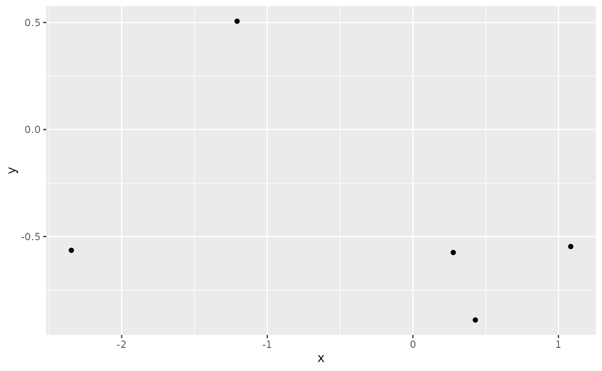

R is a programming language focusing on activities important in statistical data analysis, but it is often thought of more as an interactive environment for working with data. This concept of “environment” will become clearer as we use R to perform progressively mode complex tasks.
(7+5)/(3*6)
#> [1] 0.6666667
s = "abc"
s
#> [1] "abc"
paste(s, s, sep="")
#> [1] "abcabc"
set.seed(1234) # setting a seed for reproducibility
x = rnorm(5)
x
#> [1] -1.2070657 0.2774292 1.0844412 -2.3456977 0.4291247In the example s = "abc", we formed a string constant by enclosing abc in quotes and assigned it to the variable s. This operation could also be written s <- "abc" or "abc" -> s.
The most common syntax for working with R was illustrated in the string operation illustration: paste(s, s, sep=""). This operation took the string variables s and concatenated it with itself. The additional function argument sep="" arranges that the concatenation is to occur without any intervening text.
The examples illustrate the use of two more functions: rnorm, and plot.
The family of functions and data available in an R session depends upon the collection of packages attached in the session. Packages are used to collect related functions together with their documentation. We can add to the collection of functions available for plotting, and use the ggplot approach to designing visualizations, as follows.
library(ggplot2)
simpdf = data.frame(x,y)
ggplot(simpdf, aes(x=x, y=y)) + geom_point()
These questions should be considered in preparing to work with R for bioinformatics analysis.
The Bioconductor software/analysis/documentation ecosystem can help with answers to these questions. There are many facets to the ecosystem. Bioconductor users form an active community and post questions and answers at support.bioconductor.org. You can often get input on answers to some of the questions above by browsing and searching that site and posting your own questions.
The BSgenome package defines infrastructure that supports compact representation of genomic sequences. We’ll have a look at a recent reference build for baker’s yeast. For this to work, we need to know the name of the package that provides the genomic sequence, install it, and use appropriate functions to work with the BSgenome representation.
# BiocManager::install("BSgenome.Scerevisiae.UCSC.sacCer3") if necessary
library(BSgenome)
library(BSgenome.Scerevisiae.UCSC.sacCer3)
yeastg = BSgenome.Scerevisiae.UCSC.sacCer3
yeastg
#> Yeast genome:
#> # organism: Saccharomyces cerevisiae (Yeast)
#> # genome: sacCer3
#> # provider: UCSC
#> # release date: April 2011
#> # 17 sequences:
#> # chrI chrII chrIII chrIV chrV chrVI chrVII chrVIII chrIX
#> # chrX chrXI chrXII chrXIII chrXIV chrXV chrXVI chrM
#> # (use 'seqnames()' to see all the sequence names, use the '$' or '[[' operator
#> # to access a given sequence)Evaluation of yeastg in the R session produces a brief report on the BSgenome representation. We can look at chromosomal sequence with
yeastg$chrI
#> 230218-letter DNAString object
#> seq: CCACACCACACCCACACACCCACACACCACACCACA...GGTGTGTGGGTGTGGTGTGGGTGTGGTGTGTGTGGGWhat we call yeastg is a Bioconductor representation of the genome of a model organism. Similar representations are available for more species:
length(available.genomes())
#> [1] 100
head(available.genomes())
#> [1] "BSgenome.Alyrata.JGI.v1"
#> [2] "BSgenome.Amellifera.BeeBase.assembly4"
#> [3] "BSgenome.Amellifera.UCSC.apiMel2"
#> [4] "BSgenome.Amellifera.UCSC.apiMel2.masked"
#> [5] "BSgenome.Aofficinalis.NCBI.V1"
#> [6] "BSgenome.Athaliana.TAIR.04232008"Each of the genomes listed in the output of available_genomes() can be obtained by installing the associated package, attaching the package and then operating with the eponymous object, as in yeastg = BSgenome.Scerevisiae.UCSC.sacCer3. All of the objects representing the reference genomes of model organisms are instance of a ‘class’.
class(yeastg)
#> [1] "BSgenome"
#> attr(,"package")
#> [1] "BSgenome"One way of discovering the family of functions that have been defined to work with instances of a class is to use the methods function:
methods(class="BSgenome")
#> [1] [[ $ as.list bsgenomeName
#> [5] coerce commonName countPWM export
#> [9] extractAt getSeq injectSNPs length
#> [13] masknames matchPWM metadata metadata<-
#> [17] mseqnames names organism provider
#> [21] providerVersion releaseDate releaseName seqinfo
#> [25] seqinfo<- seqnames seqnames<- show
#> [29] snpcount SNPlocs_pkgname snplocs sourceUrl
#> [33] vcountPattern vcountPDict Views vmatchPattern
#> [37] vmatchPDict
#> see '?methods' for accessing help and source codeLet’s try one:
atgm = vmatchPattern("ATG", yeastg)
atgm
#> GRanges object with 444764 ranges and 0 metadata columns:
#> seqnames ranges strand
#> <Rle> <IRanges> <Rle>
#> [1] chrI 283-285 +
#> [2] chrI 335-337 +
#> [3] chrI 388-390 +
#> [4] chrI 436-438 +
#> [5] chrI 492-494 +
#> ... ... ... ...
#> [444760] chrM 85069-85071 -
#> [444761] chrM 85322-85324 -
#> [444762] chrM 85470-85472 -
#> [444763] chrM 85681-85683 -
#> [444764] chrM 85776-85778 -
#> -------
#> seqinfo: 17 sequences from an unspecified genomeThis gives us the locations of all occurrences of ATG in the yeast genome.
Model organism genomes and transcriptomes are catalogued at UCSC and Ensembl. The UCSC catalog is attached and used as follows:
library(TxDb.Scerevisiae.UCSC.sacCer3.sgdGene)
ytx = TxDb.Scerevisiae.UCSC.sacCer3.sgdGene
class(ytx)
#> [1] "TxDb"
#> attr(,"package")
#> [1] "GenomicFeatures"
ytx
#> TxDb object:
#> # Db type: TxDb
#> # Supporting package: GenomicFeatures
#> # Data source: UCSC
#> # Genome: sacCer3
#> # Organism: Saccharomyces cerevisiae
#> # Taxonomy ID: 4932
#> # UCSC Table: sgdGene
#> # Resource URL: http://genome.ucsc.edu/
#> # Type of Gene ID: Name of canonical transcript in cluster
#> # Full dataset: yes
#> # miRBase build ID: NA
#> # transcript_nrow: 6692
#> # exon_nrow: 7034
#> # cds_nrow: 7034
#> # Db created by: GenomicFeatures package from Bioconductor
#> # Creation time: 2015-10-07 18:20:42 +0000 (Wed, 07 Oct 2015)
#> # GenomicFeatures version at creation time: 1.21.30
#> # RSQLite version at creation time: 1.0.0
#> # DBSCHEMAVERSION: 1.1As before, we can discover available functions for working with such catalogues:
methods(class="TxDb")
#> [1] $ $<- annotatedDataFrameFrom
#> [4] as.list asBED asGFF
#> [7] assayData assayData<- cds
#> [10] cdsBy cdsByOverlaps coerce
#> [13] columns combine contents
#> [16] dbconn dbfile dbInfo
#> [19] dbmeta dbschema disjointExons
#> [22] distance exons exonsBy
#> [25] exonsByOverlaps ExpressionSet extractUpstreamSeqs
#> [28] featureNames featureNames<- fiveUTRsByTranscript
#> [31] genes initialize intronsByTranscript
#> [34] isActiveSeq isActiveSeq<- isNA
#> [37] keys keytypes mapIds
#> [40] mapIdsToRanges mappedkeys mapRangesToIds
#> [43] mapToTranscripts metadata microRNAs
#> [46] nhit organism promoters
#> [49] revmap sample sampleNames
#> [52] sampleNames<- saveDb select
#> [55] seqinfo seqinfo<- seqlevels<-
#> [58] seqlevels0 show species
#> [61] storageMode storageMode<- taxonomyId
#> [64] threeUTRsByTranscript transcripts transcriptsBy
#> [67] transcriptsByOverlaps tRNAs updateObject
#> see '?methods' for accessing help and source code